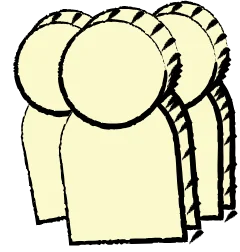
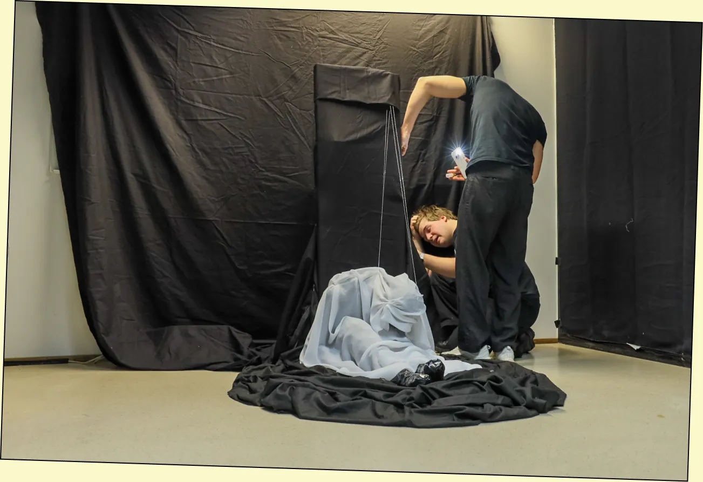
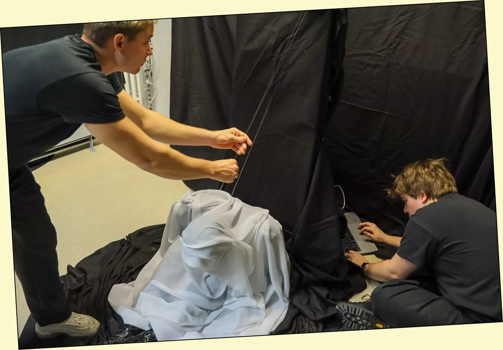
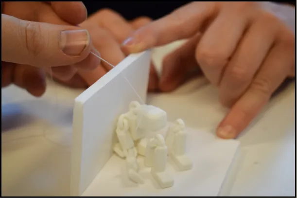
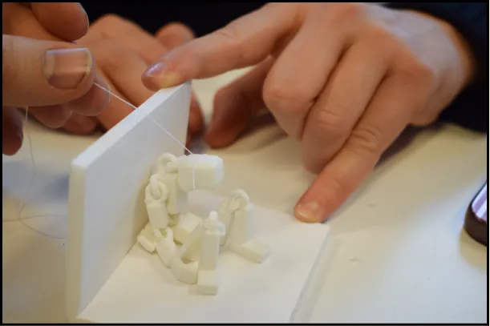
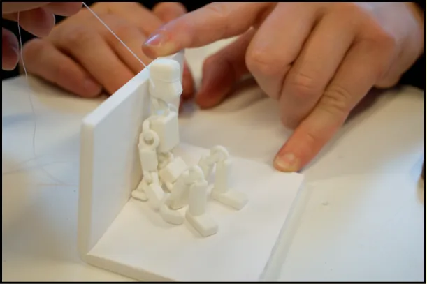
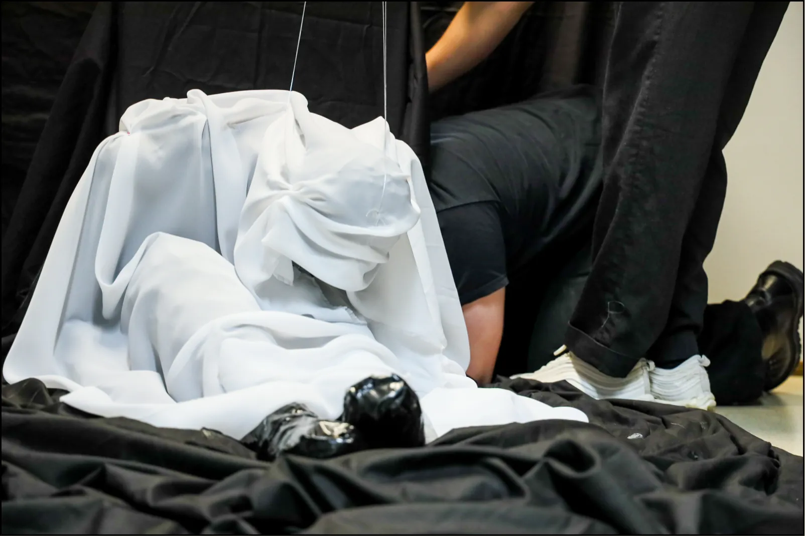
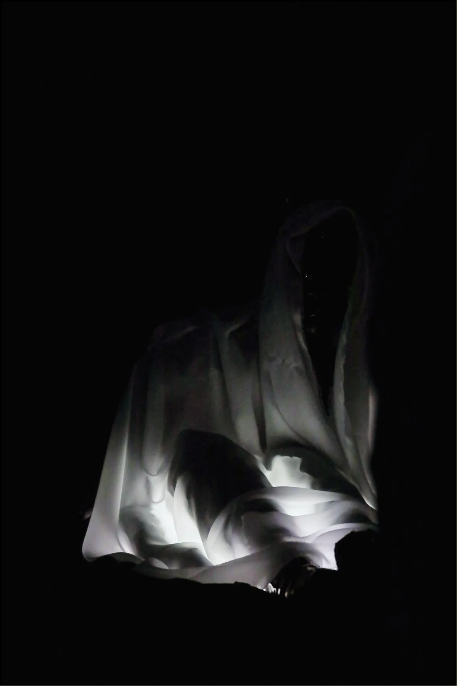
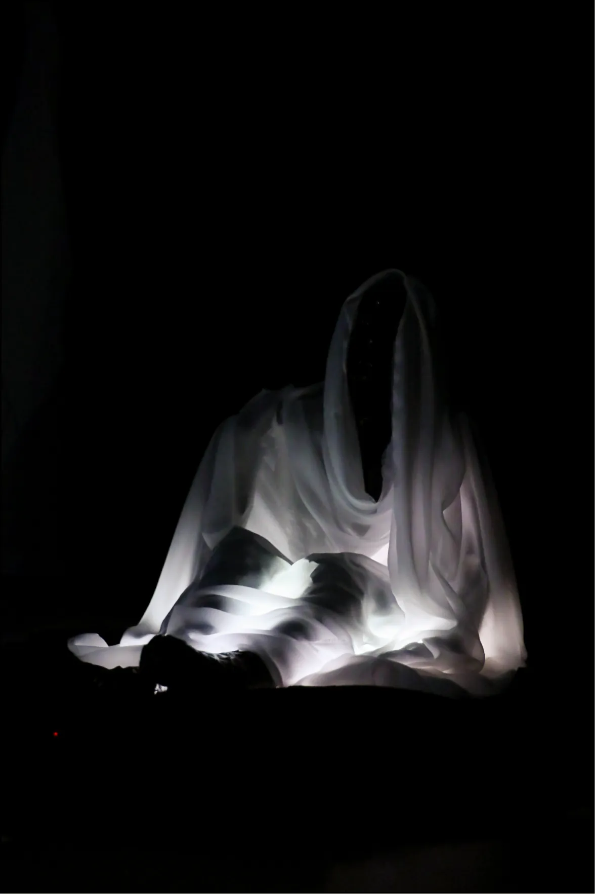

“Snakk til Meg”



Bakgrunn
Utforskningsfasen





Endelig konsept
Sluttresultatet ble en menneskestor dukke, tynn, skjør og helt sort, formet av sort gaffateip. Over kroppen ligger et hvitt, gjennomsiktig slør som dekker alt unntatt ansiktet. Dukken sitter lent mot veggen i et mørkt rom, badet i et svakt lys som pulserer nedenfra og innenfra, som en puls man ikke helt kan tyde om er levende eller døende.
I rommet ligger atmosfærisk lyd, og en hviskende stemme gjentar: "Snakk til meg." "Hold meg i live."
Fra hodet og ryggen løper fiskesnører til en stepmotor, skjult i konstruksjonen. Når besøkende snakker til dukken, reiser den seg sakte, ikke til stående, men den løfter hodet og vender blikket opp mot den som snakker. Jo lenger man snakker, jo mer våkner den til liv. Stopper man, synker den sammen igjen. Slik blir møtet mellom besøkende og dukke en stille avtale: dukkens liv avhenger av at noen bryr seg nok til å fortsette samtalen, og når besøkende til slutt forlater rommet, er det siste de ser at den faller sammen igjen.


